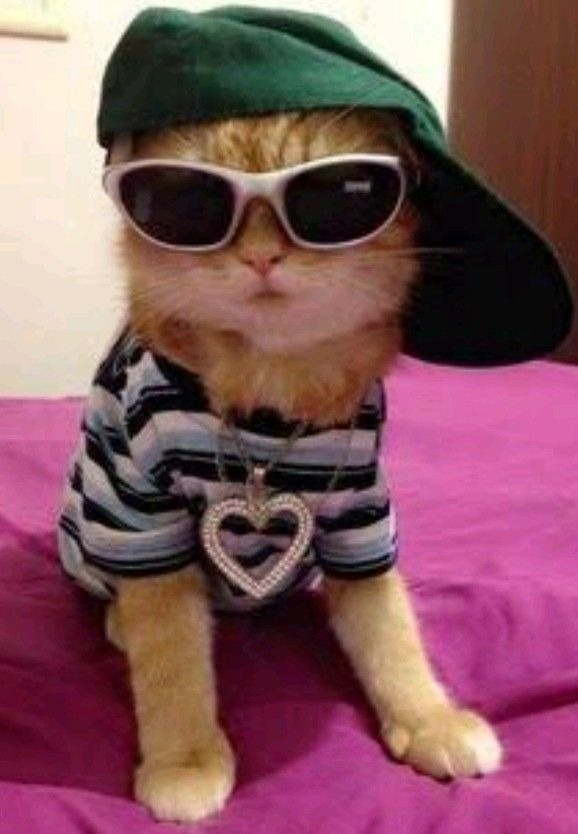
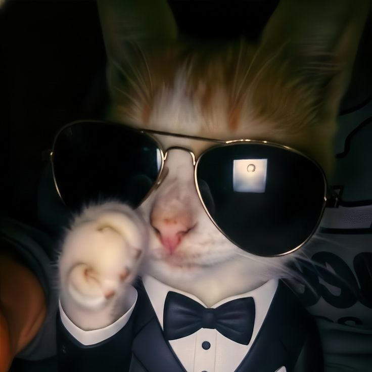
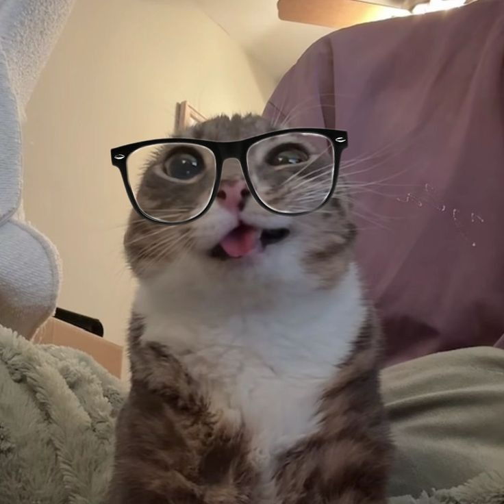
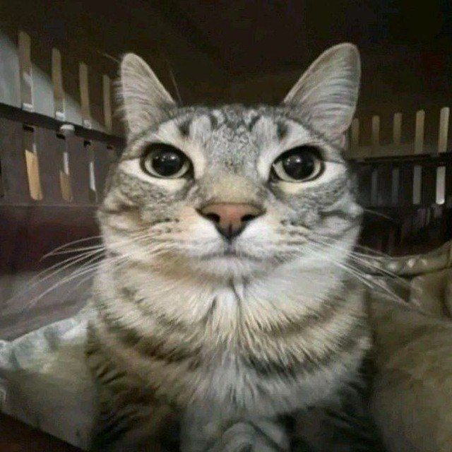
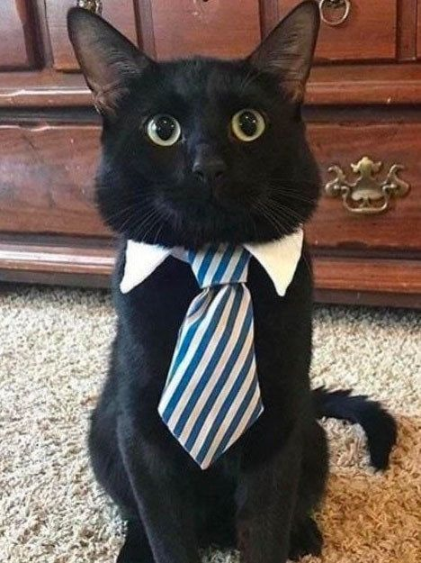
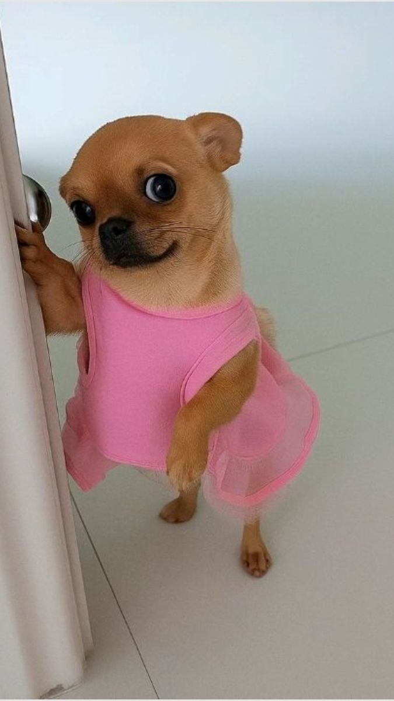
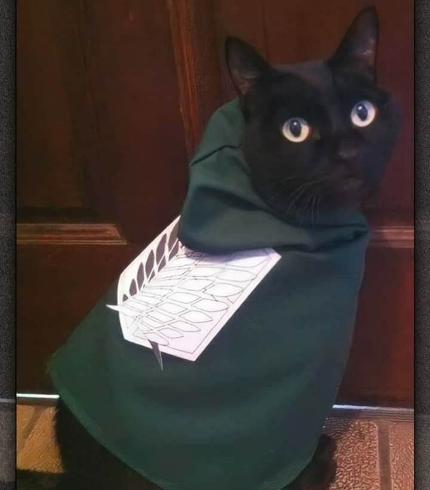
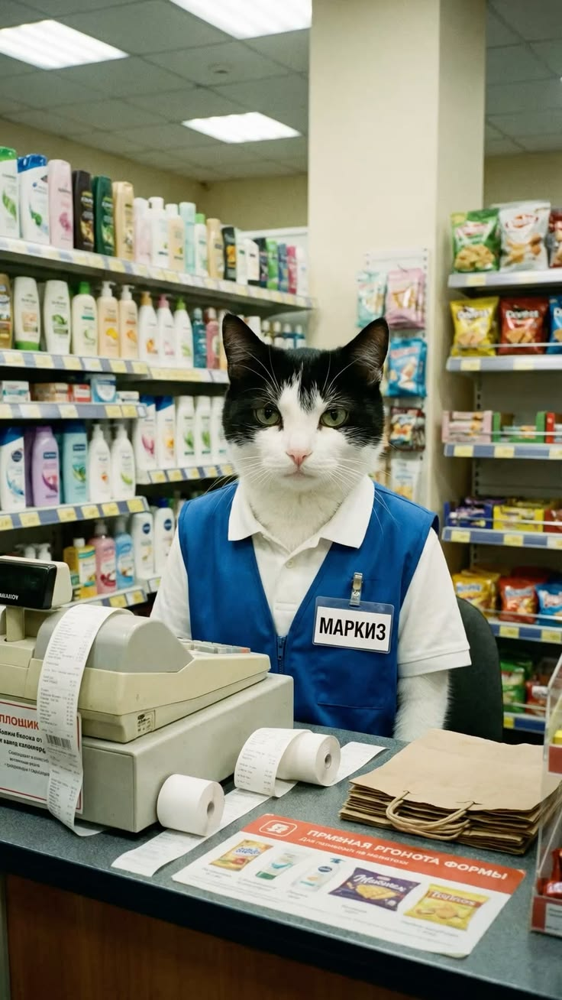

Meu Pet

Encontra o teu companheiro perfeito. Cada animal merece um lar cheio de amor.

Pequenininho e dourado como o sol, adora colo e festinhas atrás das orelhas.

Encontraram-no na rua com uma rosa na boca e desde esse dia nunca mais largou o estilo. Charmoso e elegante, o cão mais romântico do canil.

Nunca para quieta nem um segundo. Salta, corre, caça sombras e inventa brincadeiras do nada. Perfeita para quem quer um gato com energia de cachorro.

Acorda sempre com o rabo a abanar e vai para a cama da mesma forma. Bobi transforma qualquer dia mau num dia bom — basta aparecer com a bola na boca e o olhar mais fofo do mundo.

Gordinho e preguiçoso, ama dormir no sol e brincar com bolinhas de papel.

Não salvam Gotham, mas salvam o teu dia com uma garantia. Chegaram juntos, vão embora juntos — estes dois não se separam. Se tens espaço para dois heróis na tua vida, eles estão prontos.

Explora a casa como se fosse uma expedição científica. Cada gaveta aberta, cada saco no chão — Mimi tem de investigar. Curiosa, inteligente e impossível de ignorar.

Tranquila, dócil e com um instinto natural para perceber quando alguém precisa de um abraço. Mel é perfeita para famílias com crianças ou para quem quer companhia silenciosa e carinhosa.

Pequena em tamanho, enorme em personalidade. Pipa ladra para os cães grandes, rouba o lugar no sofá sem pedir licença e exige atenção com um olhar que é impossível de resistir.

Elegante e exigente, só aceita a melhor ração e o melhor colo.

Aparece do nada e desaparece sem avisar. Névoa é misteriosa e independente, mas quando decide que gostas dela, não larga mais. Afectuosa à sua maneira.

Aparece do nada e desaparece sem avisar. Névoa é misteriosa e independente, mas quando decide que gostas dela, não larga mais. Afectuosa à sua maneira.

Especialista em ping pong e em roubar a bola antes de acabar o jogo. Ping é competitivo, divertido e garante que nunca mais jogas sozinho.

Delicada e cheia de luz. Margarida escolhe sempre o lugar mais ensolarado da casa e instala-se lá com uma elegância que envergonha qualquer humano.

Veio do Brasil com o sol na alma. Animado, carinhoso e com energia para dar e vender — traz o verão para qualquer casa.

Pequeno em tamanho mas com uma presença que domina qualquer divisão. Observa tudo do alto com um olhar afiado e uma calma que intimida. Quando decide que gostas dele, és o escolhido.
.jpg)
Senta-se em silêncio, observa tudo e não se apressa para nada. Buda tem uma calma que envergonha qualquer humano — e um talento especial para apreciar os pequenos prazeres da vida.

Veio de uma galáxia muito, muito distante e está farto de viagens. Tudo o que quer agora é um sofá macio, ração boa e alguém que não lhe faça perguntas sobre o seu passado misterioso.

Já fez horas extra a mais e o chefe não lhe dá férias. Marquiz sonha com um sofá macio, ração quentinha e nunca mais ver uma caixa registadora. Salva-o desta vida